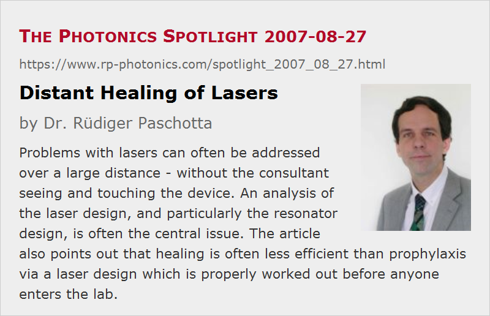

Distant Healing of Lasers
Posted on 2007-08-27 as a part of the Photonics Spotlight (available as e-mail newsletter!)
Permanent link: https://www.rp-photonics.com/spotlight_2007_08_27.html
Author: Dr. Rüdiger Paschotta, RP Photonics Consulting GmbH
Abstract: Problems with lasers can often be addressed over a large distance - without the consultant seeing and touching the device. An analysis of the laser design, and particularly the resonator design, is often the central issue. The article also points out that healing is often less efficient than prophylaxis via a laser design which is properly worked out before anyone enters the lab.

Ref.: encyclopedia articles on laser design, laser development
When someone has a severe problem with his laser, e.g. a prototype device exhibiting excessive laser noise, alignment sensitivity, or beam distortions, it is often hard for him to believe that I can solve the problem without going into that lab in order to inspect and modify the laser. It would seem like a form of distant healing, and technical staff tends to be somewhat skeptical about such things.
It can be instructive to consider how difficult it is to diagnose a problem simply by looking at the laser setup. I might verify that the problem – e.g. excessive noise – really exists, and might see some details which give me some hints (as they also do when the customer sends me some data), but how could I see the cause of the troublesome behavior? In most cases, the cause of such problems is not visible, and doesn't become apparent by touching the device. If it is the alignment sensitivity, for example, I trust that I wouldn't find a loose mirror mount, since my customers are sufficiently intelligent to find out such things themselves.
Obviously, I anyway have to use a different approach. The key is in many cases the laser design, and as a part of that it is frequently the design of the laser resonator. What I need then is a document describing the used optical components (e.g. laser mirrors and their radius of curvature) and their arrangement (including the spacing). I may then find out e.g. that the resonator is operated too close to some critical edge of a stability zone, or that the beam radius in the laser crystal is not appropriate, or that some asymmetry in the thermal lens can cause trouble. The analysis is most efficiently done at the desk in my office (rather than in the customer's lab), and the solution comes as a well founded recommendation – e.g. stating why and how to modify the resonator. That will be part of the consulting report, as sent out via e-mail. (Sometimes this comes faster than I could appear personally to see the laser.) And when my customer has fixed the problem based on my recommendation, there is not only a working laser, but also a customer knowing what to avoid next time.
So there is nothing wrong with distant healing – often enough, it is simply most efficient, when compared with other methods of healing (e.g. healing hands). However, it should not be overlooked that healing with whatever technique is often less efficient than prophylaxis, and this holds for laser issues at least as much as for the human health. If the laser design is properly worked out before any tedious experiments are done, one saves all the time for diagnosing and solving certain problems. The essence for efficiency (in terms of time and money) is to properly organize the laser development process. Unfortunately, people in industry (much like researchers, I am afraid) too often try the “quick and dirty” solution, only to find out that it is dirty indeed, but for sure not quick. Some recommended reading:
- "Laser Design: Side Product or the Basis of Laser Development?"
- "Time To Market and the Economics of Laser Development – or How to Cause Great Financial Damage without Spending Money"
P.S. In the case that you expected to read something about distant healing with lasers, I would recommend to look out for a less sophisticated technology.
This article is a posting of the Photonics Spotlight, authored by Dr. Rüdiger Paschotta. You may link to this page and cite it, because its location is permanent. See also the RP Photonics Encyclopedia.
Note that you can also receive the articles in the form of a newsletter or with an RSS feed.
Questions and Comments from Users
Here you can submit questions and comments. As far as they get accepted by the author, they will appear above this paragraph together with the author’s answer. The author will decide on acceptance based on certain criteria. Essentially, the issue must be of sufficiently broad interest.
Please do not enter personal data here; we would otherwise delete it soon. (See also our privacy declaration.) If you wish to receive personal feedback or consultancy from the author, please contact him e.g. via e-mail.
By submitting the information, you give your consent to the potential publication of your inputs on our website according to our rules. (If you later retract your consent, we will delete those inputs.) As your inputs are first reviewed by the author, they may be published with some delay.
|  |
If you like this page, please share the link with your friends and colleagues, e.g. via social media:
These sharing buttons are implemented in a privacy-friendly way!